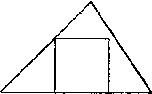
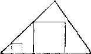

“两顶点在三角形边线上，甚至三个顶点都在三角形边线上的正方形，是
容易画出来的!”
“画张图!”
学生画出图2。
图2
“你仅仅保留了部分条件，同时你舍去了其余条件。现在未知的确定到了
什么程度?”
“如果正方形只有三个顶点在三角形的边线上，那么它是不确定的。”
“好!画张图。”
学生画出图3。
“正象你所说的，保持部分条件不能确定正方形、它会怎样变化呢?”
图3
“你的正方形的三个角在三角形的边线上，但第四个角还不在它应该在的
地方。正象你说的，你的正方形是不确定的，它能变化；第四个角也是这样，
它怎样变化?”
……
“如果你希望的，你可以用实验的办法试试看。按照图中已有的两个正方
形的相同办法，去画出更多的三个角在边线上的正方形。画出小的正方形与大
的正方形。第四角的轨迹看起来象是什么?它将怎样变化?
教师已把学生带到非常接近于解答的地方。如果学生能猜到第四个角的轨
迹是一条直线，他就得到这个主意了。
19．一个证明题
在不同平面上的两个角，其中一个角的每一边平行于另一角的对应边且方
向相同。证明这两个角相等。
我们要证的是立体几何的一个基本定理。这个问题可以提给那些熟悉平面
几何以及立体几何中下列少数事实的学生，这少数事实构成了欧几里得原理中
当前这个定理的预备知识。我们不但把直接引自我们表中的问题与建议划上线，